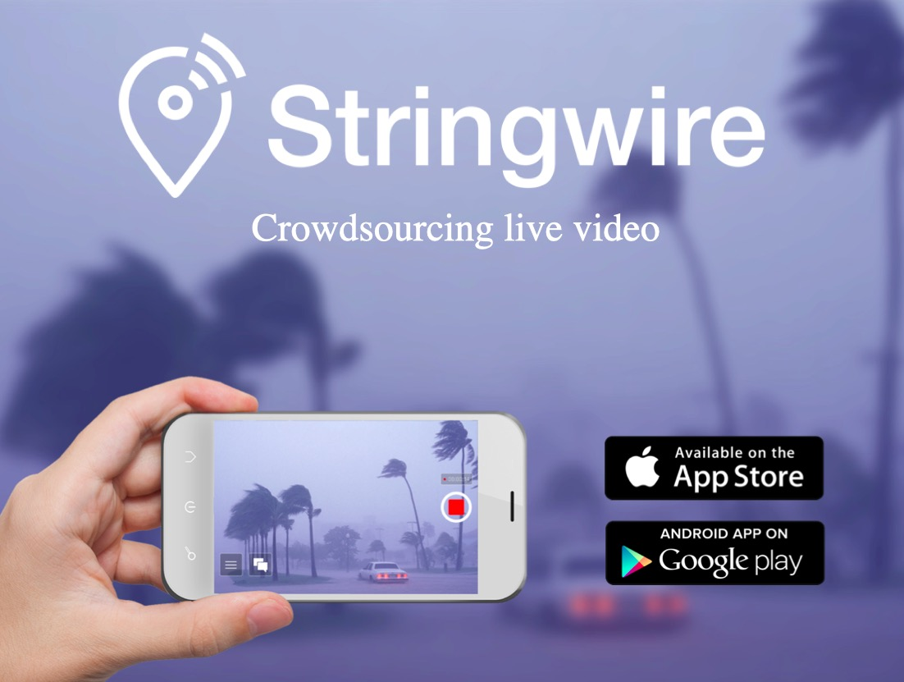

-

Stringwire : Live video for newsCrowd-sourced live video platform aquired by NBC News -
 PowerClip : Emergency EnergyCompact unit to charge appliances from a car battery during disaster relief
PowerClip : Emergency EnergyCompact unit to charge appliances from a car battery during disaster relief -
 Rehuddle : Web ConferencingThe web's fastest, simplest and most cheerful conference calling service
Rehuddle : Web ConferencingThe web's fastest, simplest and most cheerful conference calling service -
 Guinness World RecordMulti-player game for live audiences using smartphones as game controller
Guinness World RecordMulti-player game for live audiences using smartphones as game controller -
 Interactive Window DisplayA shop window installation allowing passers-by to interact through glass
Interactive Window DisplayA shop window installation allowing passers-by to interact through glass -
 Interactive Parallax ScreenA display that changes perspective depending on the viewer's position
Interactive Parallax ScreenA display that changes perspective depending on the viewer's position -
 Parading Data : A VisualizationVisualization built with Processing to display data as an animated parade
Parading Data : A VisualizationVisualization built with Processing to display data as an animated parade -
 BldgTalk : Your home onlineCommunity portal enabling residents to coordinate around issues of concern
BldgTalk : Your home onlineCommunity portal enabling residents to coordinate around issues of concern -
 The Myth of PyramisStop-motion animation shortlisted for the Lower East Side Film Festival
The Myth of PyramisStop-motion animation shortlisted for the Lower East Side Film Festival -
 Manhattleship : A game mashupTeams race across a Manhattan grid to locate the coordinates of enemy ships
Manhattleship : A game mashupTeams race across a Manhattan grid to locate the coordinates of enemy ships -
 StreetEyes : Mobile AppConnecting users with real-time data based on the location of other users
StreetEyes : Mobile AppConnecting users with real-time data based on the location of other users -
 La Serviette : A Short FilmShort film about a napkin and a chance encounter inspired by Jean-Luc Godard
La Serviette : A Short FilmShort film about a napkin and a chance encounter inspired by Jean-Luc Godard -
 MotrepreneurA scheduled phone call education system built with Ruby and Asterisk
MotrepreneurA scheduled phone call education system built with Ruby and Asterisk -
 SMS Child Crisis LineA nationwide SMS line in South Africa connecting senders with social services
SMS Child Crisis LineA nationwide SMS line in South Africa connecting senders with social services -
 Moraba : Mobile Gender GameA mobile game designed to educate young people about gender issues
Moraba : Mobile Gender GameA mobile game designed to educate young people about gender issues -
 Champ Chase : Mobile GameA game designed for a child protection campaign in South Africa
Champ Chase : Mobile GameA game designed for a child protection campaign in South Africa -
 Voteclash : Interactive DebatingA live debate format using SMS voting to engage the audience
Voteclash : Interactive DebatingA live debate format using SMS voting to engage the audience -
 International Arabic Fiction PrizeCoordination of the launch of the Arabic Booker Prize
International Arabic Fiction PrizeCoordination of the launch of the Arabic Booker Prize -
 Shakespeare in the BalkansA theater project addressing ethnic tensions in Bosnia
Shakespeare in the BalkansA theater project addressing ethnic tensions in Bosnia -
 Beach Break Live FestivalEarly branding and operations for the UK's largest student music festival
Beach Break Live FestivalEarly branding and operations for the UK's largest student music festival -
 Mongolia Charity RallyPublished photos and writing covering a journey from London to Mongolia
Mongolia Charity RallyPublished photos and writing covering a journey from London to Mongolia